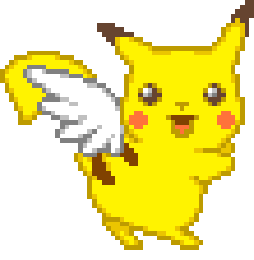
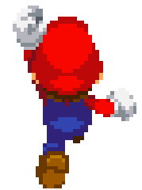
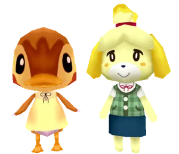
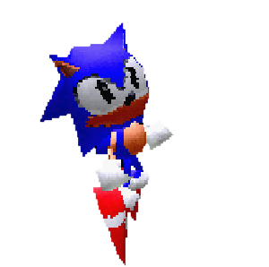
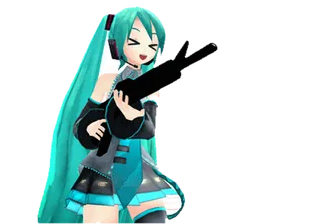

Tomás Estévez. Diseño Multimedial: UI/UX, edición de video, motion graphics, visuales y código creativo.
Cargando Game Boy…
★ UI/UX ★ MOTION GRAPHICS ★ EDICIÓN DE VIDEO ★ ANIMACIÓN ★ BRANDING ★ VISUALES INTERACTIVOS ★ TOUCHDESIGNER ★ ★ UI/UX ★ MOTION GRAPHICS ★ EDICIÓN DE VIDEO ★ ANIMACIÓN ★ BRANDING ★ VISUALES INTERACTIVOS ★ TOUCHDESIGNER ★
sobre_mi.exe
TomásEstévez
Sobre mí
Diseño experiencias visuales entre el UI/UX, el motion y los entornos interactivos, cruzando herramientas gráficas con código creativo.
Me muevo cómodo entre la edición, la animación y la parte técnica: desde armar interfaces y piezas para redes hasta programar visuales que reaccionan en tiempo real.
Busco sumarme a proyectos y equipos donde pueda aportar ritmo visual, criterio de interfaz y resolución técnica.
fundamentos_creativos.doc
Fundamentos Creativos
Licenciatura en Diseño Multimedial, Facultad de Artes, UNLP — 2023 a la actualidad
Habilidades
Motion graphics
Diseño UX/UI
Edición de video
Estética visual
Diseño gráfico
Código creativo
Herramientas
Photoshop
Figma
Illustrator
Canva
After Effects
CapCut
proyectos.dir
DirecciónC:\PORTFOLIO\PROYECTOS\
Proyectos/





filo_news.fig
UI/UX
Rediseño Filo News
Rediseño de la sección de música de Filo News, enfocado en que los usuarios descubran playlists sin vueltas y con alto impacto visual.
Nació a partir de un estudio de usuarios. Adapté la interfaz para mobile y desktop, con una arquitectura y jerarquías pensadas para conectar al público joven con las tendencias musicales de forma directa y dinámica.
Vagari es un proyecto inmersivo ambientado en Oniria, un universo donde los sueños colectivos materializan paisajes liminales habitables. A partir de esta premisa narrativa, estuve a cargo de construir la identidad visual del proyecto, su despliegue transmedia, las piezas visuales finales y el sitio web de archivo que documenta toda la experiencia.
Mi rol y entregables
01 Branding e Identidad Visual
Definición del sistema gráfico, paleta atmosférica (tonos profundos, acentos luminosos y texturas liminales) y selección tipográfica con impronta retro-futurista / Y2K. Traducción del lore de Oniria —los nómades, el prado onírico y los símbolos de acceso— a un lenguaje visual coherente para piezas de difusión, archivo y puesta en escena.
Diseño e implementación de un portal interactivo en realidad aumentada mediante Kivicube. A través del navegador móvil, los usuarios pueden invocar una puerta 3D que funciona como umbral hacia un entorno onírico en 360°, expandiendo la narrativa del proyecto más allá del espacio de exhibición.
03 Visuales Finales & Diseño Sonoro
Creación y postproducción de las piezas visuales generativas y secuencias audiovisuales finales en After Effects, TouchDesigner y Processing, acompañadas de paisajes sonoros ambientales desarrollados para sostener el clima onírico en tiempo real.
Visuales interactivos · TouchDesignerLos visuales en la tele de la instalación
04 Sitio Web de Archivo y Proceso
Diseño y desarrollo front-end de la landing page del proyecto (esteveztomii.github.io/Vagari/), pensada como memoria digital que recapitula el universo conceptual, el proceso creativo, las piezas audiovisuales y el registro completo de la obra.